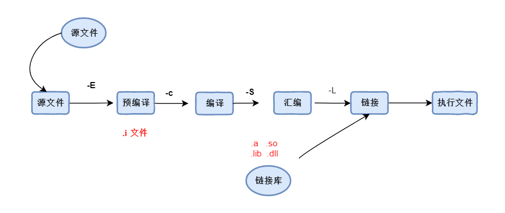

一、make和cmake#
1. make#
make，常指一条计算机指令 ，可以从一个名为Makefile的文件中获得如何构建程序的依赖关系。通常项目的编译规则就定义在makrfile 里面，比如： 规定先编译哪些文件，后编译哪些文件... 当编写一个程序时，可以为它编写一个makefile文件，不过在windows下的很多IDE 工具，内部都集成了这些编译的工作，只需要点击某一个按钮，一切就完成了。换算到手动操作的话，就需要编写一个makefile文件，然后使用make命令执行编译和后续的安装。
1. 关于程序编译#

2. makefile 的规则#
如果项目的文件很多，那么makefile的内容也会很多，但是最核心的规则即是下面的几行语句。
target: 表示生成目标文件
prerequisites： 生成目标文件以来的文件
command： 表示命令，也就是从右到左的命令是什么。
- makefile语法 :
1 2 3 4 | |
- 示例
这是一个简单的makefile文件内容，表示最终要构建出一个main.o 文件， 根据两个源文件main.cpp 和 a.cpp构建 ， 最后的那一行表示执行构建的真正命令。
1 2 | |
- 只想编译
target: 表示生成目标文件 main.o , 文件的编译来源是 main.cpp g++: 表示编译 c++代码 ， 如果编译c代码，使用 cc（其实就是 gcc） 编译。
-c : 表示只编译，不会生成执行程序。
1 2 | |
3. makefile 入门#
在编写makefile的时候，可以指定最终生成的程序名称，并且可以由多个目标文件组合生成。
1 2 3 4 | |
- 清空目标
在完成程序构建后，除了生成真正执行的程序文件之外，还生成了中间临时文件 ， 那么可以在makefile文件的最后，清除这些文件。 需要手动执行
make clean命令
1 2 3 4 5 | |
更为稳健的做法是
.PPHONY表示clean是一个伪目标 ， “伪目标”并不是一个文件，只是一个标签，由于“伪目标”不是 文件，所以make无 法生成它的依赖关系和决定它是否要执行。我们只有通过显式地指明这个“目标”才能让其 生效。
1 2 3 | |
２. cmake#
cmake 其实是一个工具，类似的工具有
GNU MakeQT的qmake, 微软的MS nmake... 但是这些工具遵循着不同的规范、在面对跨平台的问题下，就显得捉襟见肘了, 在每一种标准下写一次makefile . 为了解决这些问题，Cmake应运而生。
- 允许开发者编写一种平台无关的 CMakeList.txt 文件来定制整个编译流程
- 然后再根据目标用户的平台进一步生成所需的本地化 Makefile 和工程文件，如 Unix 的 Makefile 或 Windows 的 Visual Studio 工程。从而做到“Write once, run everywhere”。
1. CmakeList.txt 解释#
对于简单的项目，
CmakeList.txt的内容非常简单，只有简单的几行。
1 2 3 4 5 6 7 8 9 10 11 | |
2. 子工程创建#
clion创建出来的工程师单一独立的工程，在同一窗口下，不允许创建两个工程，但是允许通过创建子工程。并且随着idea家族主推的项目和模块的理念，子工程的创建也符合了这一特征。每一个子工程都需要有自己的
cmaklist.txt并且在外部主工程的cmakelist.txt中注册子工程。
- 子工程的cmakelist.txt
1 | |
- 主工程的cmakelist.txt
1 2 3 4 5 6 7 8 9 | |
3. 变量#
在cmakelist.txt 中，也可以定义变量。以方便未来能继续使用这份数据。需要注意的是，变量也可以做增量设置，有点类似容器中的追加的意思。
1 2 3 4 5 | |
- 输出变量数据
1 2 3 4 5 6 7 8 9 | |
4. 定义宏#
可以在cmakelist.txt中定义宏，然后在代码中进行判断是否存在该宏，可以很好的根据外部的状态来决定执行哪些代码
1 | |
5. 自定义配置#
cmake 允许外部配置文件，定义一些全局相关的信息，并且在程序内部使用。比如：版本的信息，或者自定义一些路径等等
- 定义配置文件
在
config.h.in里面定义年纪18 ，然后在源码中读取。
1 | |
- 在
cmakelist.txt中，指定配置文件以及最终转化成的头文件关系。PROJECT_SOURCE_DIR是cmake内置的变量，指的是当前工程的路径地址，最终的config.h会由cmake生成。
1 2 3 4 | |
- 在源码中读取
1 2 3 4 5 6 7 8 | |
3. 导入第三方依赖#
在C/C++中，项目最终都会分成两个部分内容，一个是
头文件( .h )一部分是源文件( .cpp )。 如果要编写好的功能给其他程序使用，通常会把源文件打包形成一个动态链接库文件( .so .a ） 文件 。 值得注意的是，头文件一般不会打包到链接库中，因为头文件仅仅只是声明而已。 链接库也增加了代码的重用性、提高编码的效率，也可看看成是对源码的一种保护。
1. 什么是库#
库是写好的现有的，成熟的，可以复用的代码。现实中每个程序都要依赖很多基础的底层库，不可能每个人的代码都从零开始，因此库的存在意义非同寻常 。 本质上来说库是一种可执行代码的二进制形式，可以被操作系统载入内存执行。库有两种：
静态库（.a、.lib）和动态库（.so、.dll）
1 2 | |
- 静态链接库
静态库最终需要和使用的源程序，打包到一起形成一个新的可执行程序。这就使得有关程序运行依赖的库已经在程序中包含，即便到了客户机上，也能够运行。静态库对程序的更新、部署和发布页会带来麻烦。如果静态库liba.lib更新了，所以使用它的应用程序都需要重新编译、发布给用户。 linux下的静态库文件是 .a 而windows的静态库文件是.lib
- 动态链接库
动态库在程序编译时并不会被连接到目标代码中，而是在程序运行是才被载入。不同的应用程序如果调用相同的库，那么在内存里只需要有一份该共享库的实例，规避了空间浪费问题。动态库在程序运行是才被载入，也解决了静态库对程序的更新、部署和发布页会带来麻烦。用户只需要更新动态库即可，增量更新。
2. 使用命令生成库#
一般来说，只会把源码打包到库当中，而头文件则会被排除在外。 假设现在有一个
heima.h头文件 和 对应的源文件heima.cpp
-fPIC :（ Position-Independent Code） 作用于编译阶段，告诉编译器产生与位置无关代码(Position-Independent Code)，则产生的代码中，没有绝对地址，全部使用相对地址，故而代码可以被加载器加载到内存的任意位置，都可以正确的执行。这正是共享库所要求的，共享库被加载时，在内存的位置不是固定的。
-shared: 生成共享目标文件。通常用在建立共享库使用
1 | |
3. 导入动态库#
导入动态库是c/c++ 开发中必不可少的一个环节，由于clion使用cmake来管理项目。
导入依赖库，需要导入两个部分的内容：头文件和源文件。源文件一般已经被打成了.so文件，所以实际上就是导入头文件和 导入.so文件。
1 . 导入头文件#
头文件一般会放置在一个文件夹include中，可以把这个文件夹拷贝到工程内部，也可以放置在外部磁盘上，只需要指定地址找到它即可。
1 | |
2. 导入库文件#
如果只导入了头文件，而没有到实现文件，那么会抛出异常，比如：xxx未定义之类的错误。导入so文件
- 直接和执行程序关联
1 2 3 4 5 6 7 8 | |
- 添加多个依赖库
1 2 3 4 5 6 7 8 9 10 11 | |
- 还可以使用变量的方式声明，再引用
1 2 3 4 5 6 7 8 9 10 11 12 13 14 15 | |
- 使用find_library 查找库文件
在知道地址路径的情况下可以使用find_library来查找库文件，相比于前面的直接设置，find_library还可以设置查找的规则。
1 2 3 4 5 6 7 8 9 10 11 12 13 14 15 16 17 | |
- 查找指定路径下的多个库文件
有时候一个项目会打出来多个so文件，它们会放在同一个目录中，此时可以使用find_library 配合 foreach 来查找库
1 2 3 4 5 6 7 8 9 10 11 12 13 14 15 16 17 18 19 20 21 22 23 24 25 26 27 | |
4. 编译第三方库#
1. 编译opencv#
- 解压opencv 源码包
1 | |
- 进入解压包后，安装依赖库
此处需要花费点时间，下载依赖。
1 | |
- 如果出现依赖未能安装问题，使用以下命令修复
1 2 3 4 | |
- 在解压的目录内部，创建build文件夹
1 2 | |
- 在build文件夹的内部执行以下命令
1 | |
- 执行make命令，进行编译
1 | |
- 执行make install 命令 ，进行安装
1 | |
2. 添加opencv依赖#
- find_package的使用
1 2 3 4 5 6 7 8 9 | |